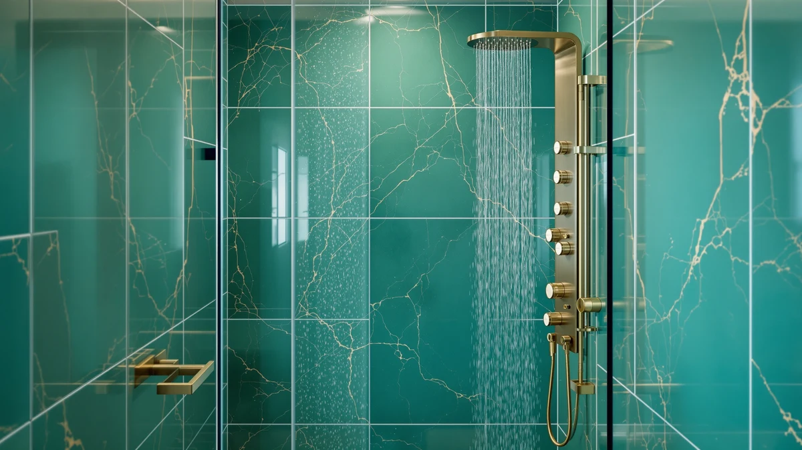

Shower Panel vs Shower Head (2026): Which Upgrade Is Worth It?


Things to Know Before You Buy
- They are not really the same category. A shower head is a single spray fixture; a shower panel is a whole wall-mounted tower with an overhead rainfall head, body jets, and a handheld combined into one unit.
- Water pressure decides everything. Body jets need roughly 40+ PSI to feel good. If your home runs low pressure, a panel will disappoint and a good shower head is the smarter buy.
- Install effort is worlds apart. A shower head is a 5-minute DIY swap onto the existing arm. A panel mounts over your hot and cold supply lines and is a bigger, sometimes plumber-level job.
- Budget range. Shower heads run about $20 to $80; shower panels run about $150 to $370. You are paying for the spa experience, not just water flow.
- Cheap panels can leak. Low-end towers sometimes weep at the jet and hose fittings. Buy a solid stainless unit and use thread tape on every connection.
If your shower feels tired, you have two very different ways to fix it, and they sit at opposite ends of the effort-and-money scale. On one side is the humble shower head: unscrew the old one, screw on a new one, and you are done in five minutes for the price of a takeout dinner. On the other side is the shower panel, a full stainless tower that bolts to the wall and turns a plain stall into something closer to a spa, with rainfall from above, jets across your back, and a handheld wand all working off one unit.
Neither one is objectively "better," they solve different problems. The right pick depends on your water pressure, your wall and plumbing, your budget, and honestly how much of a project you want on your hands. Below we break down what each actually is, how they compare on build, price, and the day-to-day experience, and exactly who should choose which. (If you decide the simple route is for you, our sister site best-shower-heads.com covers shower heads in far more depth than we do here.)
Quick Answer
Buy a shower head if you want a cheap, five-minute upgrade, or if your home has low water pressure, it is the safe, easy win. Buy a shower panel if you have decent pressure (40+ PSI), a suitable wall, and the budget for a genuine spa experience with rainfall, body jets, and a handheld in one unit. Pressure and install effort are the deciding factors, not price alone.
What is Shower Panel?
A shower panel, sometimes called a shower tower or shower system, is an all-in-one wall unit that replaces your entire shower setup. Instead of a single spray, you get a tall stainless or glass panel mounted to the wall that bundles several fixtures together: an overhead rainfall head for that soft top-down soak, a bank of body jets down the middle that hit your back and sides, and a handheld wand on a hose for rinsing off, cleaning the stall, or washing a dog. Many panels add a tub spout at the bottom, and a lot of them include an LED screen that shows the water temperature so you know exactly what you are stepping into.
The appeal is obvious: one purchase transforms a basic shower into a multi-zone experience without a full remodel. A diverter valve lets you switch between the rainfall, the jets, the handheld, or run several at once. The trade-off is that a panel mounts directly over your existing hot and cold supply lines, so it is a bigger install than a shower head, it demands real water pressure to make the jets worthwhile, and cheaper models can leak at the fittings if they are poorly made or installed without care. It also uses a lot of water when every outlet is running at the same time.
What is Shower Head?
A shower head is exactly what it sounds like: the spray fixture at the end of your shower arm, and nothing more. This is the classic upgrade because it is so painless, you unscrew the old head, wrap a little thread tape on the arm, and screw on the new one. Five minutes, no plumber, no cutting into the wall. That simplicity is the whole point.
What you give up in scope you gain in variety and value. Shower heads come in every flavor imaginable: wide rainfall heads, handheld units on a slide bar, high-pressure heads engineered to feel strong even on weak plumbing, and filtered heads that cut chlorine and hard-water minerals. Most sit between $20 and $80. The honest limitation is that a shower head is a single spray zone, there are no body jets, no overhead-plus-side combination, and none of the spa theater a panel delivers. It makes your existing shower nicer; it does not reinvent it.
Head-to-Head: Build Quality & Durability
Both can be built well or badly, but they fail in different ways. A quality shower head is a simple object, a solid brass or ABS body with a good finish will last years, and even if a cheap one clogs or drips, replacing it costs $30 and five minutes. There is very little that can go seriously wrong.
A shower panel is a more complex machine with more failure points: multiple jets, a diverter, internal hoses, and a handheld connection, any of which can weep if the unit is thin-gauge steel or assembled carelessly. This is where material matters. A heavy stainless-steel panel like the ELLO&ALLO or Blue Ocean feels rigid, resists rust, and seals reliably; the cheapest no-name towers are where you hear leak complaints. The upside is that a good panel is a substantial, permanent-feeling fixture. The reality is that when a panel does go wrong, the fix is more involved than swapping a head. Buy quality stainless, tape every fitting, and a panel will hold up, but the margin for error is smaller than with a plain head.
Head-to-Head: Price & Value
This is the least ambiguous comparison. A shower head runs roughly $20 to $80, and the install is free because you do it yourself. A shower panel runs roughly $150 to $370 for the unit alone, and depending on your plumbing you may want a professional to mount it over the supply lines, which adds labor.
So on pure dollars, the shower head wins every time, it is the cheapest meaningful upgrade you can make to a bathroom. But value is not the same as price. A panel is doing the job of four fixtures at once (rainfall, jets, handheld, and often a tub spout), so if you actually want that spa experience, $229 for a stainless ELLO&ALLO is far cheaper than remodeling to install those pieces separately. The value question is really: do you want a better spray, or do you want a different shower? If it is the former, the head is unbeatable on cost. If it is the latter, the panel is the only thing that gets you there, and it prices fairly for what it does.
Head-to-Head: Use Experience
Day to day, a shower head gives you one thing done well: a single stream of water, whatever style you chose. That is enough for most people most of the time, and a good high-pressure or rainfall head genuinely feels like an upgrade. But it is one zone. You stand under it, you rinse, you are done.
A shower panel changes the actual ritual. You can rinse under gentle rainfall, switch to body jets that work your lower back after a long day, grab the handheld to rinse your legs or the walls, and watch the temperature on the LED display before you step in. It is a noticeably more indulgent experience, when the water pressure supports it. That last clause is the catch: on low pressure the jets feel weak and the rainfall drizzles, and the panel underdelivers on the exact thing you bought it for. With 40+ PSI behind it, though, a panel is a small daily luxury that a shower head simply cannot replicate. It also uses more water when you run everything together, which is worth keeping in mind for both your bill and your water heater.
When to Choose Shower Panel
Choose a shower panel if you want to transform the shower, not just improve the spray, and you have the conditions to support it. Specifically, a panel is the right call when:
- Your home has solid water pressure (roughly 40 PSI or more) so the body jets and rainfall actually perform.
- You have a suitable flat wall and can run the unit over your hot and cold supply lines, or you are willing to bring in a plumber.
- You want a spa-style routine, overhead rainfall, back jets, and a handheld, without a full bathroom remodel.
- Your budget comfortably covers $150 to $370 for the unit, and you are buying quality stainless rather than the cheapest tower you can find.
If that describes you, a good panel is one of the highest-impact upgrades you can make to a bathroom for the money.
When to Choose Shower Head
Choose a shower head if you want the easiest, cheapest win, or if the conditions for a panel are not there. It is the smarter buy when:
- Your water pressure is low or inconsistent, a high-pressure head will feel far better than jets that never get enough flow.
- You want a fast, no-tools, no-plumber upgrade you can finish in five minutes.
- Your budget is tight, or you simply do not want to spend more than $80 on the shower.
- You are renting, or otherwise cannot make a permanent, wall-mounted change to the plumbing.
- You are happy with your shower's layout and just want the water itself to feel better.
For the majority of homes, a quality shower head is the sensible answer. Our sister site best-shower-heads.com dives deep into rainfall, handheld, high-pressure, and filtered options if that is the route you take.
Our Top Picks
If you have decided a panel is right for you, here are the three stainless-steel towers we would actually put on a wall. All three prioritize solid build and reliable fittings, the two things that separate a panel you love from one that leaks.

Editor’s Pick
ELLO&ALLO Stainless Steel Shower Panel
Our overall favorite. The ELLO&ALLO packs rainfall, body jets, a handheld, and an LED temperature display into a rigid stainless body that seals reliably, all for a fair $229.97. It is the panel we would buy for most bathrooms.
$229.97
Check Price on Amazon
Best Value
Blue Ocean 52" Stainless Steel
The premium step-up. Blue Ocean's 52-inch stainless tower is taller and more substantial, with strong jets and a heavy-duty feel that justifies the $369 price if you want the most complete spa setup and have the pressure to drive it.
$369.00
Check Price on Amazon
Premium Choice
FUZ Contemporary Shower Panel Tower
The value pick. At $159 the FUZ delivers the core panel experience, rainfall, jets, and a handheld, in stainless steel for the least money. Tape the fittings carefully on install and it is a lot of shower for the price.
$159.00
Check Price on AmazonFrequently Asked Questions
Can I install a shower panel myself?
Sometimes. A panel mounts over your existing hot and cold supply lines, so if your plumbing lines up with the unit's inlets and you are comfortable with thread tape and fittings, it can be a determined DIY job. But it is a bigger task than a shower head, and if the connections do not align or you want to be sure it will not leak, a plumber is money well spent. A shower head, by contrast, is always a five-minute DIY swap.
Do shower panels need high water pressure?
Yes, this is the single biggest factor. Body jets and rainfall heads need roughly 40 PSI or more to feel strong, especially when several outlets run at once. On low or inconsistent pressure a panel underperforms, and a high-pressure shower head will actually feel better. Check your home's pressure before buying a panel.
Are shower panels worth it compared to a shower head?
It depends on what you want. A shower head is unbeatable on cost and ease, about $20 to $80 for a five-minute upgrade. A panel costs $150 to $370 and asks more of your plumbing and pressure, but it delivers a genuine spa experience with rainfall, body jets, and a handheld that no single head can match. If you want a better spray, get a head; if you want a different shower, the panel is worth it.
Final Verdict
There is no universal winner here, only the right fit for your bathroom. The shower head is the pragmatic choice: cheap, instant, endlessly varied, and the correct answer for low-pressure homes, tight budgets, renters, and anyone who just wants the water to feel better without a project. The shower panel is the aspirational choice: a stainless tower that turns a plain stall into a spa, provided you have the water pressure, a suitable wall, and the budget to do it with quality hardware.
Our honest advice: check your water pressure first, because that one number settles most of the debate. With strong pressure and the appetite for an upgrade, a panel like the ELLO&ALLO Stainless Steel Shower Panel at $229.97 is a small daily luxury that earns its keep. Without it, or without the budget, a great high-pressure shower head will make you happier than a panel that never gets the flow it needs, and our sister site best-shower-heads.com is the place to find one.